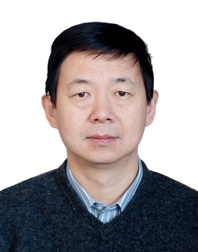

|  | 肖丰收 教授 浙江大学(西溪校区) 催化研究所 催化楼201室 Tel: 0571-88278232 Email:fsxiao@zju.edu.cn; fsxiao@mail. jlu.edu.cn |
| 肖丰收教授1963年1月出生于山东。 1979-1983年在吉林大学获得理学学士学位； 1983-1986年在吉林大学获得理学硕士学位； 1986-1990年获得理学博士学位(吉林大学、大连化物所以及日本北海道大学联合培养)。 1992-1996年吉林大学副教授； 1993-1994年美国加州大学Davis分校博士后； 1996-2009年吉林大学教授 2009-至今浙江大学求是特聘教授 研究方向： 沸石分子筛和纳米孔材料的合成、表征与催化性能研究。 在该领域，发表论文SCI收录论文400余篇，包括发表在JACS上的10余篇，他引12000余次，当前H因子59，获授权专利40余项，在国际会议上做Plenary和Keynote报告20余次，包括两次美国Gorden Conference的报告。获得奖励： 1992年获中国化学会青年化学奖； 1995年获国家教委霍英东优秀青年教师化学奖； 1997年入选国家教育部跨世纪人才计划； 1998年获得国家基金会的国家杰出青年基金； 1999年获得中国科协、中央组织部、团中央等部门颁发的中国青年科技奖； 2000年获得劳动人事部颁发的有突出贡献的中青年专家； 2008年获Thomson Scientific卓越研究奖； 2009年教育部自然科学二等奖； 学术兼职： 亚洲太平洋催化理事会(APCAT)秘书长；中国催化学会委员；中国分子筛学会委员；Catalysis Surveys from Asia 编委；催化学报编委；物理化学学报编委；I&EC Research副主编
|
|
您所在的位置：首页 >> 团队成员 >>肖丰收